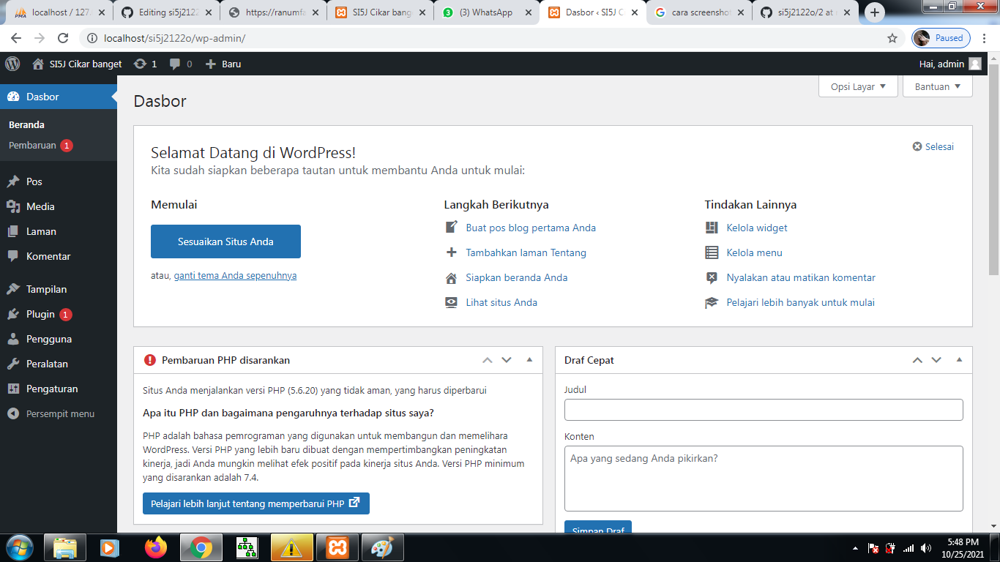

NIM: 1922500033
Nama: Ranum Fatwa Aulia
Kelompok: SI5J
Hasil atau kesimpulan dari pertemuan 2 adalah:
- di dalam htdocs, harus ada folder si5j2122o, sehingga pada browser bisa diakses dengan http://localhost/si5j2122o
- jika object not found (404), maka cek terlebih dahalu nama folder antara htdocs denga yang diketik di localhost
- jika ada tulisan error establishing database connection, cek dahulu apakah mysql sudah running pada control panel
- jika sudah running, buka wp-config.php pada folder si5j2122o, dan cek db_name. pastikan db_name ada di phpmyadmin
- jika pada phpmyadmin belum ada nama database nya, maka import terlebih dahulu file sql bahan pertemuan ke 2 (hasil pertemuan ke 1)
- wordpress memiliki 2 sisi, 1 tampilan backend (untuk admin/dashboard) dan 1 nya lagi tampilan front end (untuk pengunjung atau client area)
- untuk backend, harus login dulu di alamat http://localhost/si5j2122o/wp-admin
berikut tampilan halaman web setelah di restore:

Berikut tampilan front end:
Berikut tampilan back end:
